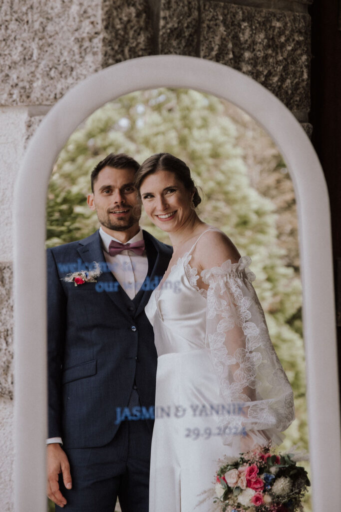

Der Schwarzwald ist bekannt für seine dichten Wälder, sanften Hügel, malerischen Täler und charmanten Dörfer. Diese atemberaubende Naturkulisse bietet zahlreiche traumhafte Locations.

Die Schönheit des Schwarzwalds
Ob du von einer romantischen Trauung in einer historischen Kapelle, einer Feier in einem traditionellen Schwarzwaldhof oder einer modernen Hochzeit in einem stilvollen Hotel träumst – hier findest du alles, was dein Herz begehrt.
Vielfältige Hochzeitslocations
- Historische Kapellen und Kirchen: Der Schwarzwald ist reich an historischen Kapellen und Kirchen, die sich perfekt für eine romantische Trauung eignen.
- Traditionelle Schwarzwaldhöfe: Für Paare, die sich eine rustikale Hochzeit wünschen, bieten die traditionellen Schwarzwaldhöfe eine einzigartige Kulisse im Boho- oder Vintage-Stil.
- Moderne Hotels und Resorts: Erstklassige Hotels bieten exquisite Ausstattung, erstklassigen Service und atemberaubende Ausblicke.
- Freiluft-Locations: Ob in einem blühenden Garten, auf einer grünen Wiese, mitten im Wald oder am Ufer eines idyllischen Sees.
Deine Traumhochzeit im Schwarzwald
Als Hochzeitsplanerin unterstütze ich dich dabei, deine Traumhochzeit im Schwarzwald zu verwirklichen. Von der Auswahl der perfekten Location über die Planung aller Details bis hin zur Koordination am Wedding Day.
Fazit
Der Schwarzwald bietet eine Fülle von atemberaubenden Locations und vielfältigen Möglichkeiten. Mit seiner märchenhaften Landschaft und dem einzigartigen Charme ist er die perfekte Wahl für Paare, die sich eine unvergessliche Feier wünschen.